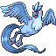
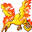
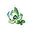
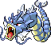
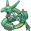

Legendäre Pokémon
Wie du jedes legendäre Pokémon bekommst: was vorher erledigt sein muss, welches Item du brauchst und wo das Pokémon dann wartet.
Regeln für alle legendären Pokémon
- Gefangen: Das Pokémon gibt es danach kein zweites Mal.
- Besiegt: Es kehrt nach deinem nächsten Sieg über eine Pokémon-Liga zurück – egal in welcher Region.
- Geflohen (du oder das Pokémon): Es ist nach 3 Tageswechseln wieder da.
- Verlierst du den Kampf, bleibt alles, wie es war.
- Umherstreifende Pokémon wandern einfach weiter, bis du sie fängst. Nach jedem Liga-Sieg laufen sie wieder los, falls sie nicht mehr unterwegs sind.
- Ob ein Pokémon da ist, entscheidet sich beim Betreten der Karte. Verlasse sie und komm zurück, wenn sich etwas geändert haben sollte.
- Dieselben Regeln gelten für Lapras im Einheitstunnel und das rote Garados am See des Zorns.
Kanto
Arktos
- Level
- Lv. 40
- Keine Bedingung: Das Pokémon wartet dort, sobald du den Ort erreichst.

Zapdos
Lavados
- Ort
- Siegesstraße
- Level
- Lv. 40
- Keine Bedingung: Das Pokémon wartet dort, sobald du den Ort erreichst.

Mewtu
- Ort
- Azuria-Höhle
- Level
- Lv. 50
- Werde Champ von Kanto. Danach gibt der Wächter den Eingang der Azuria-Höhle frei.
- Mewtu wartet im Untergeschoss der Höhle.
Mew
Jirachi

Johto
Lugia oder Ho-Oh: die Wahl auf Route 39
Auf Route 39 fliegt ein Schatten über dich hinweg, und ein Mann fragt dich: „Gold“ oder „Silber“? „Gold“ macht Ho-Oh zum Pokémon deiner Geschichte, „Silber“ macht es Lugia. Die Wahl lässt sich nicht mehr ändern.
Das gewählte Pokémon triffst du in der Geschichte auf Lv. 78. Das andere bekommst du später auf Lv. 80 – beide sind in jedem Spielstand zu haben.
Silberflügel und Buntschwinge: Eine der beiden bekommst du im Radioturm von Dukatia City. Für die Begegnungen brauchst du sie nicht – entscheidend sind die Glocken der Kimono-Girls.
Die Kimono-Girls im Tanztheater
- Schließe die Prüfung in der Drachenhöhle ab. Wenn du danach Ebenholz City betrittst, ruft Professor Lind an.
- Sprich mit Professor Lind in seinem Labor in Neuborkia. Er gibt dir einen Meisterball und schickt dich zu den Kimono-Girls.
- Geh nach Teak City. Vor dem Tanztheater triffst du deinen Rivalen; betritt danach das Theater und sprich mit Tamao.
- Besiege die fünf Kimono-Girls direkt hintereinander.
- Als Belohnung bekommst du die Gischtglocke (wenn du Lugia gewählt hast) oder die Klarglocke (bei Ho-Oh).
Lugia
- Level
- Lv. 78 / Lv. 80
Wenn du Lugia gewählt hast
- Besiege die Kimono-Girls und nimm die Gischtglocke entgegen. Die vier Tentoxa auf Route 41, die den Weg versperren, verschwinden damit.
- Geh in die tiefste Kammer der Strudelinseln. Die Kimono-Girls tanzen, Lugia erscheint auf Lv. 78.
Wenn du Ho-Oh gewählt hast
- Fange Ho-Oh – besiegen reicht nicht.
- Werde Champ von Johto.
- Betritt Route 41: Die Tentoxa sind jetzt weg. Lugia wartet in der tiefsten Kammer der Strudelinseln auf Lv. 80.

Ho-Oh
- Ort
- Glockenturm
- Level
- Lv. 78 / Lv. 80
Wenn du Ho-Oh gewählt hast
- Besiege die Kimono-Girls und nimm die Klarglocke entgegen.
- Zeige die Glocke dem Weisen im Haus vor dem Glockenturm in Teak City. Er gibt den Weg frei.
- Steig auf das Dach des Glockenturm. Die Kimono-Girls tanzen, Ho-Oh erscheint auf Lv. 78.
Wenn du Lugia gewählt hast
- Fange Lugia – besiegen reicht nicht.
- Werde Champ von Johto.
- Der Weise lässt dich auch mit der Gischtglocke in den Glockenturm. Ho-Oh wartet auf dem Dach auf Lv. 80.

Suicune
- Ort
- Glockenturm
- Level
- Lv. 78
- Geh in Teak City in die Turmruine. Nach dem Kampf gegen deinen Rivalen fällst du ins Untergeschoss; dort laufen die drei legendären Raubkatzen davon.
- Reise weiter nach Oliviana City und dann nach Anemonia City. Dort siehst du Suicune und kämpfst gegen Eusin.
- Begegne Suicune am Wasser auf Route 42.
- Geh danach auf Route 36 zu der Stelle, an der Mogelbaum stand. Suicune läuft nach Norden davon, und Eusin schickt dich zum Glockenturm.
- Besiege die Kimono-Girls: Mit ihrer Glocke lässt dich der Weise in den Glockenturm.
- Suicune wartet im Erdgeschoss des Glockenturm.

Raikou

Celebi
- Level
- Lv. 75
- Fange Raikou, Entei und Suicune. Kurze Zeit später ruft dich Professor Lind an: Er hat den GS-Ball von Professor Eich an Kurt geschickt.
- Besuche Kurt in Azalea City und sprich mit ihm. Er untersucht den Ball.
- Verlasse sein Haus. Kurt kommt dir nach und gibt dir den GS-Ball.
- Geh zum Schrein im Steineichenwald und lege den Ball hinein. Celebi erscheint.

Garados
- Level
- Lv. 55
- Das rote Garados schwimmt mitten auf dem See des Zorns. Der erste Kampf gehört zur Geschichte: Danach bekommst du die Rote Haut, egal wie er ausgeht.

Lapras
- Level
- Lv. 55
- Keine Bedingung und kein bestimmter Wochentag: Lapras schwimmt im untersten Stockwerk des Einheitstunnel.

Hoenn
Regirock, Regice und Registeel
- Level
- Lv. 100
- Geh in die Siegelkammer und setze im ersten Raum vor der Inschrift an der Rückwand Schaufler ein. Ein Durchgang öffnet sich.
- Stell Wailord an die erste und Relicanth an die letzte Stelle deines Teams und lies die Inschrift im hinteren Raum. Die Eingänge der drei Höhlen öffnen sich.
- Regirock – Wüstenruine auf Route 111: Lies die Inschrift und setze an der beschriebenen Stelle Zertrümmerer ein.
- Regice – Inselhöhle auf Route 105: Lies die Inschrift und laufe dann einmal an der Wand entlang um die ganze Höhle.
- Registeel – Grabmal auf Route 120: Lies die Inschrift und setze an der beschriebenen Stelle Blitz ein.

Kyogre und Groudon
- Level
- Lv. 100
- Werde Champ von Hoenn.
- Sprich mit dem Forscher im Obergeschoss des Wetterinstituts auf Route 119. Er nennt dir eine Route mit ungewöhnlichem Wetter.
- Starker Regen: Kyogre wartet in einer Höhle unter Wasser. Such auf der genannten Route die Tauchstelle und tauche dort.
- Große Dürre: Groudon wartet in einer Höhle an Land. Such auf der genannten Route den neuen Höhleneingang.

Rayquaza
- Ort
- Himmelturm
- Level
- Lv. 100
- Spiel die Geschichte von Hoenn, bis Wassili dir den Himmelturm öffnet, und wecke Rayquaza auf der Spitze.
- Sieh zu, wie Rayquaza den Kampf in Xeneroville beendet.
- Steig danach erneut auf die Spitze des Himmelturm. Rayquaza wartet dort.

Latias und Latios


Deoxys
- Level
- Lv. 80
- Fange alle Pokémon des Hoenn-Pokédex. Welche dazu zählen, steht unter Pokédex vervollständigen.
- Sprich mit Professor Eich in seinem Labor in Alabastia. Er gibt dir das Auroraticket.
- Mit dem Ticket im Beutel bieten die Schiffe die Entstehungsinsel als Ziel an – in den Häfen von Oliviana City und Orania City (ab dem Johto-Titel) sowie Graphitport City und Seegrasulb City (ab dem Hoenn-Titel).
- Löse auf der Insel das Rätsel mit dem Dreieck. Deoxys erscheint.

Weitere feste Begegnungen
Diese Pokémon stehen als Hindernis oder Falle in der Welt. Für sie gelten die Regeln oben nicht.
| Pokémon | Ort | Level | So kommt es zum Kampf |
|---|---|---|---|
| Route 12, Route 16 | Lv. 30 / Lv. 35 | Du brauchst die Pokéflöte von Herrn Fuji in Lavandia; er ist dort, nachdem du ihn im Pokémon-Turm befreit hast. Jedes Relaxo gibt es nur einmal: Besiegt oder geflohen ist es weg. | |
| Pokémon-Turm | Lv. 30 | Der Geist im Pokémon-Turm. Ohne Silph Scope kannst du nicht gegen ihn kämpfen; du findest es im Rocket-Versteck. | |
| Kraftwerk | Lv. 35 | Sieht aus wie ein Itemball. Jedes gibt es nur einmal. | |
| Route 36 | Lv. 50 | Gieße den Baum mit der Schiggykanne. Du bekommst sie im Blumenladen von Dukatia City mit drei Johto-Orden. Fliehst du, bleibt es stehen; besiegt ist es weg. | |
| Route 41 | Lv. 100 | Sie versperren den Weg zu den Strudelinseln und greifen an, wenn du sie mehrmals ansprichst. Sie lassen sich nicht fangen. | |
| Rocket HQ | Lv. 60 | Die drei gehören zur Geschichte im Versteck. Fliehst du, bleiben sie stehen. | |
| Route 120, Route 119 | Lv. 80 | Unsichtbar auf dem Weg. Das erste macht Troy auf der Brücke sichtbar; danach gibt er dir das Devon-Scope für die übrigen. Jedes gibt es nur einmal. | |
| Aquas Versteck | Lv. 85 | Sieht aus wie ein Itemball. Jedes gibt es nur einmal. | |
| Neu Malvenfroh | Lv. 75 | Sieht aus wie ein Itemball. Jedes gibt es nur einmal. |
Was es nicht gibt
Die Insel im Süden, das Ferneiland und der Nabelfels sind nicht erreichbar. Äon-Ticket, Alte Karte und Geheimticket bekommst du nirgends. Jedes legendäre Pokémon gibt es genau einmal, an den Orten auf dieser Seite.